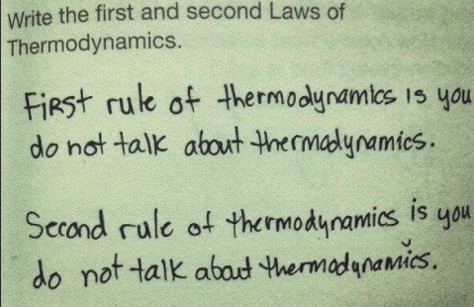

Using Monte-Carlo Simulation to Analyze the Effects of Electrostatic and Gravitational Forces
on Statistical Mechanics
02/19; In Progress
While studying for the USAPhO exam, I came across entropy as an area of study in thermodynamics. There are two "types" of entropy, one which observes the macroscopic states of
a certain gas (pressure, temperature, etc.), and another that treats the gas at the microscopic level. Because it is very difficult
to model each individual atom and molecule of a gas, a statistical model has been developed, which uses probability as a treatment for the concept of entropy.

Source: Facebook
I was particularly excited to see something I really liked (discrete math!) being applied to something I sort of liked (physics is fun, but thermodynamics...), so I decided to delve
a little deeper than what was simply presented with the textbook by posing some questions that I could tackle with programming, statistics, and physics.
It may be worthwhile, for the sake of strong conceptual understanding of both me and my reader, to present the classical theory of statistical entropy.
The idea of statistical entropy is to define some definite values of entropy \(S\). By the second law, we have already defined quite rigorously \(\Delta S\), given by
$$ \Delta S = \int_{\text{In equilibrium}} \frac{dQ}{T}$$
but there is no consensus for what \(S\) is. If we can define just one value of \(S\), then we can, via the above equation, figure out all other values of \(S\).
So what Boltzmann did was define a definition for the value of \(S\), which gave a whole lot more meaning to \(\Delta S\): $$S = k_B \ln(\Omega)$$ where \(k_B = 1.38 \times 10^{-23} \text{J K}^{-1}\) and \(\Omega\) is the number of "states" that a certain system has.
Calculating the number of states in a system goes down to the most fundamental treatment of the system, where each molecule of the gas is distinguishable and fits some closed space (say a box). To visualize this, we pretend every molecule of all \(N\) total molecules is a fair coin in a box (still distinguishable) and we shake the box so that each of the coins are randomly heads or tails. We want to count how many states exist in the arrangement.
An easy way to do this is consider a(nother) general case. Say we fix the number of heads to be $n$. Since coins are distinguishable, but order does matter, the number of ways the coins can be heads is \(\binom{N}{n}\). So we can then solve for the total states $$\Omega = \binom{N}{0} + \ldots + \binom{N}{N} = \sum_{i = 0}^{N} \binom{N}{i} = 2^N$$
The claim is that the coin analogy translates perfectly to the molecular level, by considering molecules choosing between two equal sides of a room instead of a coin. However, this is only mathematically precise when assuming that molecules arrange perfectly randomly . That's how we got to the statistical treatment. But in reality, molecules aren't distributed completely randomly, there are other forces of nature at work. The argument (which is to a large extent true) is that nonrandomness can be neglected for simplicity.
Dimensionality Reduction in Machine Learning
01/19; with Professor G. Chen
This is a paper I recently published that culminates my work over the recent months. I worked with Professor Guangliang Chen from SJSU
to review what exists in current literature and then test the theory against a data set. Some of the results were really quite surprising!
I then was fortunate to given a presentation regarding some of my findings to a rather reputable set of people. I have attached the presentation
slides (wherein I delve deeper into the results, as opposed to scrutinizing the theory), below.
Speed Versus Gradient of my Bike Rides
10/18; Inspired by Jacob Nie
Analyzed the speed and gradient of my bike rides with Python and a bit of maths. Converted the gpx files native to Strava into a dataframe of GPS values.
I did not have access to Google Earth's API, so speed was estimated mathematically. Because the distance covered in small time intervals subtended a very small
angle of the Earth's radius, I simply used the Cartesian distance formula* to estimate such a distance. The differential size of distance also allowed me to assume
a constant speed and thus I could approximate speed. Elevation was found using the rasterio package, and I just subtracted adjacent elevations to find how the elevation changed.
The graph shows gradient, which I approximated** as the ratio of elevation and distance, plotted against speed. The orange line is the linear model of the graph, which shows that I go slower on steeper hills (makes sense...). A heatmap is also shown below to explore what types of terrain and speeds I traverse the most often.
Obviously big residuals, because of measurement inaccuracies and the general engineer-esque methods of my calculations.
*Maybe I should use spherical coordinates here to be a little more accurate
**By the Taylor expansion of the (arc)tangent function